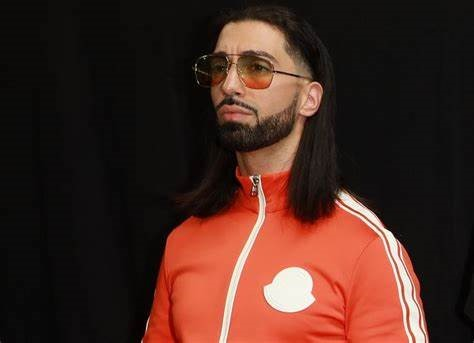

Arthur Eveillard, un jour, une histoire
Je n'aime pas le codage, mais je trouve cela intéressant, merci #Audencia#Lewagon
Je n'aime pas le codage, mais je trouve cela intéressant, merci #Audencia#Lewagon
Après plusieurs années à chercher le sport qui me convenait le mieux, le handabll à fini par attirer ma curiosité.
Cela fait maintenant 3 ans que j'ai arrêté ce sport après une même durée au poste d'ailié gauche.
Mon plus beau souvenir concernant ce sport restera la fois où j'ai pu participer à un tournois international.
Par contre, j'ai beaucoup de mal avec le codage.
(Si un jour j'ai la chance d'avoir ma propre entreprise, je ne ferai pas mon site moi-même, je payerai un professionel)
Le codage, euh non pardon, le piano a été une vraie révélation lorsqu'à l'âge de 7 ans, à la garre de Nantes, un jeune homme se mit à jouer du Choppin. J'ai tout de suite adoré cette douce mélodie et me suis immédiatement mis à prendre des cours. J'ai alors obtenu le prix d'excellence avant d'arrêter pour me concentrer sur mes études.
Avant d'entrer à Audencia, je ne savais pas ce que je souhaitais faire... La situation était affolante, bien que j'ai directement mis le codage de côté, j'hésitais entre l'ingénieurie et le commerce. Après plusieurs discussions avec des profesionnels, je me suis rendu compte de l'ouverture que le monde du commerce pouvait m'apporter. Depuis ce jour, j'aime ce que je fais.